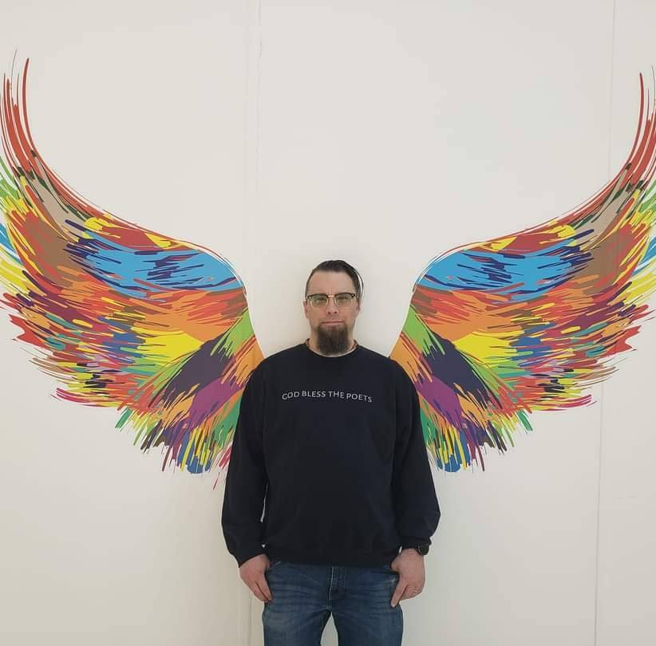

I don't come with answers.
I come with presence, with questions,
and with the strange conviction
that the holy still moves
in the places we've abandoned.
Poet · Post-Christian Theologian · Spiritual Director · Chaplain-in-Formation
I'm Aaron — a poet, a post-Christian theologian, a spiritual director, and a chaplain-in-formation. I live in Oregon, where the rain is honest and Portland keeps us weird. The thread that holds all of this together is longer than I can explain in a sentence, but it's here if you want to follow it.
About Aaron and his work →Spiritual Direction
If you're in the middle of something — a faith that's shifting, a grief that won't name itself, a question that keeps returning — spiritual direction offers a particular kind of accompaniment. Not advice. Not answers. Presence, and careful attention to what's already alive in you.
Poetry, Prose, Prayer and Protest
Words written at the edge of faith and its unraveling — poetry, prose, prayer, and protest in the form of theological essays, devotional prose, and the occasional act of liturgical defiance. The writing lives at The Cluttered Mouth.
Spiritual Direction
Not advice. Accompaniment.
Spiritual direction is one of the oldest forms of care in the contemplative tradition — and one of the least understood. It is not therapy, not pastoral counseling, not advice-giving. It is the practice of attending together to what is already alive in you: the movements of longing, grief, wonder, doubt, and the occasional, startling glimpse of something holy.
Who this is for
People who have left the church but haven't left the longing. Those in the middle of theological deconstruction who still sense something sacred beneath the rubble. Queer people who have been told their bodies are problems to be solved. Survivors of religious trauma who need someone who won't flinch at their anger. People with no religious background at all, who simply feel the weight of their own inner life and want a guide. If you are somewhere in that territory, this may be for you.
How I work
My approach is trauma-informed and rooted in the contemplative tradition — Ignatian discernment, centering prayer, the practices of stillness that cross traditions including zazen and Buddhist contemplative practice. I draw on Internal Family Systems (IFS) as a framework for understanding the inner life, and I work from a post-Christian, incarnational theology that takes the body seriously, honors lament, and refuses to spiritualize suffering away. There is no correct doctrine required. There is no belief you need to hold. There is only the honest conversation about what is actually happening in you.
What to expect
Sessions are typically 50 minutes, held via video. We meet once a month, or more frequently if you are in a season of particular intensity. I keep notes that stay between us. I ask more questions than I answer. I am not here to fix you — I am here to sit with you while you find your own way.
I am currently accepting new directees.
If something in you is stirring — if you're curious, or cautious, or somewhere in the middle — I'd be glad to hear from you. The first conversation is free and carries no obligation. It is simply a conversation.
Thank you. I'll be in touch within a few days.
Writing
Everything stuck in the throat. Poetry. Prose. Prayer. Protest.
Poetry
These poems were written at the edge of language — where faith breaks down and something else comes through.
The First Time I Read Poetry with Pádraig Ó Tuama
I had a dream before I woke up— / they often happen that way, before I wake up.
Read →Essays & Theology
Prose written from inside the questions — post-Christian theology, contemplative practice, trauma, liberation, and the long work of unlearning.

Aaron J. Smith
Formation
I'm a poet, a post-Christian theologian, a spiritual director, and something of a mess — which seems like the right combination for this work. I live with my wife and two kids in Oregon, where the rain is honest and the green remind me that everything takes longer than I think. I write at The Cluttered Mouth. I direct in the contemplative tradition. I am in formation as a community chaplain through the Order of Hildegard, a cross-vocational, inter-spiritual Order and Community of Practice. All of it is connected, though it took me a long time to see how.
Theological Formation
My theology is post-Christian in the sense that I no longer hold the dogmatic structures of evangelicalism — but I have not left the tradition so much as I have learned to read it differently, against itself, through the lens of those it has harmed. The through-line in my theological thinking is kenosis: God's self-donating as the shape of divinity itself, which means that power-over is always a theological problem, and vulnerability is always a theological resource. My framework — Incarnational, Lamenting, Liberative — grounds my work in the body, takes suffering seriously rather than spiritualizing it, and orients everything toward liberation for the marginalized.
Chaplaincy Formation
I am in the process of ordination through the Order of Hildegard, a cross-vocational, inter-spiritual Order and Community of Practice. My chaplaincy formation is oriented toward community and interfaith chaplaincy — accompaniment outside the walls of any single tradition, in the ordinary places where people are actually suffering and seeking.
I am not trying to build a platform. I am trying to be faithful to the thread — the one that runs through the poems and the theology and the direction sessions and the slowly forming chaplaincy. If you're here, you've probably found a piece of that thread. Welcome.
Thank you. I'll be in touch.